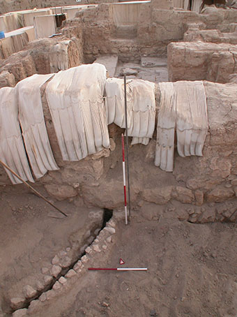
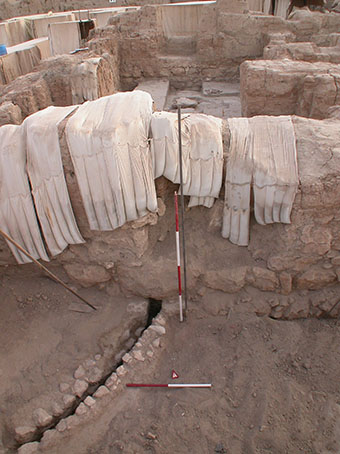
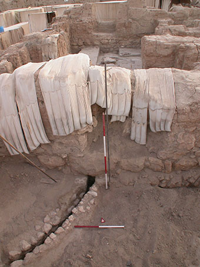
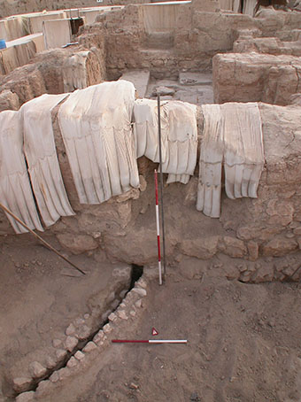

A building impacts each and every person who comes in contact with it – rooms must be crossed in a specific sequence to reach a goal, items must be stored, documents must be written and read, and kings, gods, merchants or mothers encountered. Architecture is not a mere vessel, containing such events – much more, it is the expression of a grammar of space which directly and meaningfully impresses (here I use ‘impress’ in the sense of leaving a mark, as if on clay) every single interaction. In 2015-2016 I was awarded an Art Histories and Aesthetic Practices Fellowship within the Transregional Forum. My research focused on a theoretical examination of perception in ancient architecture including a critical examination of the methodology and assumptions, and case studies from a diverse range of regions and chronological periods.
The archaeologist’s focus on material culture allows us to look at a specific aspect of ancient life both diachronically and synchronically, and to present those panoramas as a window onto the daily activities of the ancients. A major trend in current archaeology is to recover the perceptual dimension of the ancients. The aim is to go beyond the factuality of the data, important though that is, and to recover, through arguable and documentable procedures, the human dimension.
Architecture is a major factor in this effort, and exploring the full impact of its spaces and volumes is an intriguing task. Space, as an expression of the architectural volumes expressed in Mesopotamian palatial architecture, can seem an abstract, distant concept, visible but not understood, and lacking interaction. These volumes, however, carry a deeper meaning: they conditioned and were affected by the daily life of a civilization which is lost in a remote past. By analyzing these architectural spaces with a view towards understanding aspects of style and perception, one can go beyond mere ‘space’ as a volume to the familiarity of ‘place’ - a deeper recognition and understanding of what a volume contains, beyond the merely spatial. The ‘space’ of an architectural volume is also an expression of one or more authors – not only the architect, but also the person commissioning the building as well as, over time, the audience or ‘users’ who adapt the building. Since, as archaeologists, the information at our disposal is limited to the material record of excavations, it is through the understanding of space (defined through style and perception) that we can attempt to outline these authors and their influence on the structure uncovered.